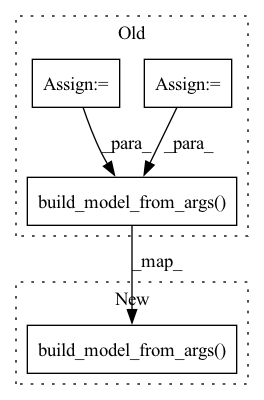

Pattern ID :33377

Before Change
def __init__(self, args):
super(KGCNTrainer, self).__init__(args)
self.args = args
self.in_dim = args.in_dim
self.out_dim = args.out_dim
self.model_name = args.model
self.device = args.device
self.l2_weight = args.weight_decay
self.task = build_task(args)
self.g = self.hg
if args.dataset == "LastFM4KGCN":
self.ratingsGraph = self.task.dataset.g_1.to(self.device)
self.neighborList = [8]
self.trainIndex, self.evalIndex, self.testIndex = self.task.get_idx()
self.model = build_model(self.model_name).build_model_from_args(self.args, self.g)
self.optimizer = th.optim.Adam(self.model.parameters(),lr = self.args.lr, weight_decay=self.args.weight_decay)
self.model = self.model.to(self.device)
After Change
self.neighborList = [8]
self.trainIndex, self.evalIndex, self.testIndex = self.task.get_idx()
self.model = build_model(self.model_name).build_model_from_args(self.args, self.hg).to(self.device)
self.optimizer = th.optim.Adam(self.model.parameters(), lr=self.args.lr, weight_decay=self.args.weight_decay)
def KGCNCollate(self, index):
In pattern: SUPERPATTERN
Frequency: 3
Non-data size: 4
Instances
Fragment ID: 96106986
Project Name: bupt-gamma/openhgnn
Commit Name: c659d9bfe018a9cc070bb0fdfd1a41b59760c47f
Time: 2021-09-07
Author: 34649403+Theheavens@users.noreply.github.com
File Name: openhgnn/trainerflow/kgcn_trainer.py
M Class Name: KGCNTrainer
N Class Name: KGCNTrainer
M Method Name: __init__(2)
N Method Name: __init__(2)
M Parent Class: BaseFlow
N Parent Class: BaseFlow
M File Name: openhgnn/trainerflow/kgcn_trainer.py
N File Name: openhgnn/trainerflow/kgcn_trainer.py
M Start Line: 24
M End Line: 40
N Start Line: 30
N End Line: 30
'>
Before Change
self.args = args
self.model_name = args.model[0:-3]
print(self.model_name)
self.device = args.device
self.task = build_task(args)
self.hg = self.task.get_graph().to(self.device)
self.num_classes = self.task.dataset.num_classes
if hasattr(self.task.dataset, "in_dim"):
self.args.in_dim = self.task.dataset.in_dim
if not hasattr(self.task.dataset, "out_dim") or args.out_dim != self.num_classes:
print("Modify the out_dim with num_classes")
args.out_dim = self.num_classes
self.args.category = self.task.dataset.category
self.category = self.args.category
self.model = build_model(
self.model_name).build_model_from_args(self.args, self.hg)
self.hgnn_ac = build_model(
"HGNN_AC").build_model_from_args(self.args, self.hg)
self.optimizer = torch.optim.Adam([{"params": self.model.parameters()},
After Change
self.args.category = self.task.dataset.category
self.category = self.args.category
self.model = build_model(
self.model_name).build_model_from_args(self.args, self.hg).to(self.device)
self.hgnn_ac = build_model(
"HGNN_AC").build_model_from_args(self.args, self.hg).to(self.device)
self.optimizer = torch.optim.Adam([{"params": self.model.parameters()},
'>
Fragment ID: 96106971
Project Name: bupt-gamma/openhgnn
Commit Name: 52ccb6b8a0bc096c7838b1d47eb755d85b54ef83
Time: 2021-09-12
Author: 75086617+dddg617@users.noreply.github.com
File Name: openhgnn/trainerflow/node_classification_ac.py
M Class Name: NodeClassificationAC
N Class Name: NodeClassificationAC
M Method Name: __init__(2)
N Method Name: __init__(2)
M Parent Class: BaseFlow
N Parent Class: BaseFlow
M File Name: openhgnn/trainerflow/node_classification_ac.py
N File Name: openhgnn/trainerflow/node_classification_ac.py
M Start Line: 30
M End Line: 82
N Start Line: 32
N End Line: 77
'>
Before Change
self.args = args
self.model_name = args.model
self.device = args.device
self.task = build_task(args)
self.hg = self.task.get_graph().to(self.device)
self.model = build_model(self.model_name).build_model_from_args(self.args, self.hg)
self.optimizer = (
th.optim.Adam(self.model.parameters(), lr=args.lr, weight_decay=args.weight_decay)
)
After Change
super(HetGNNTrainer, self).__init__(args)
self.category = self.task.dataset.category
self.model = build_model(self.model_name).build_model_from_args(self.args, self.hg).to(self.device)
self.optimizer = (
th.optim.Adam(self.model.parameters(), lr=args.lr, weight_decay=args.weight_decay)
'>
Fragment ID: 96106984
Project Name: bupt-gamma/openhgnn
Commit Name: b4abe102260ba305a2635d3fa920340ff48c7906
Time: 2021-09-07
Author: 34649403+Theheavens@users.noreply.github.com
File Name: openhgnn/trainerflow/hetgnn_trainer.py
M Class Name: HetGNNTrainer
N Class Name: HetGNNTrainer
M Method Name: __init__(2)
N Method Name: __init__(2)
M Parent Class: BaseFlow
N Parent Class: BaseFlow
M File Name: openhgnn/trainerflow/hetgnn_trainer.py
N File Name: openhgnn/trainerflow/hetgnn_trainer.py
M Start Line: 29
M End Line: 44
N Start Line: 29
N End Line: 30